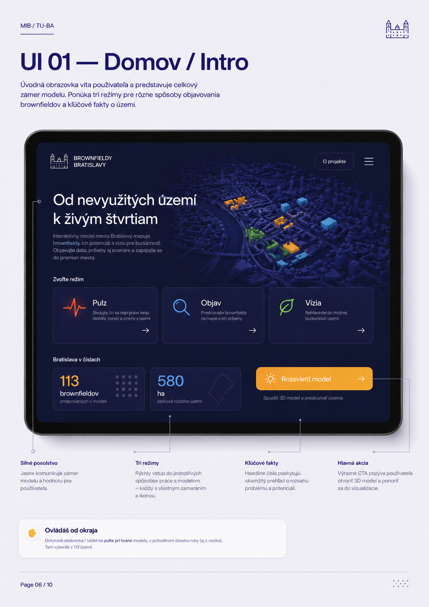
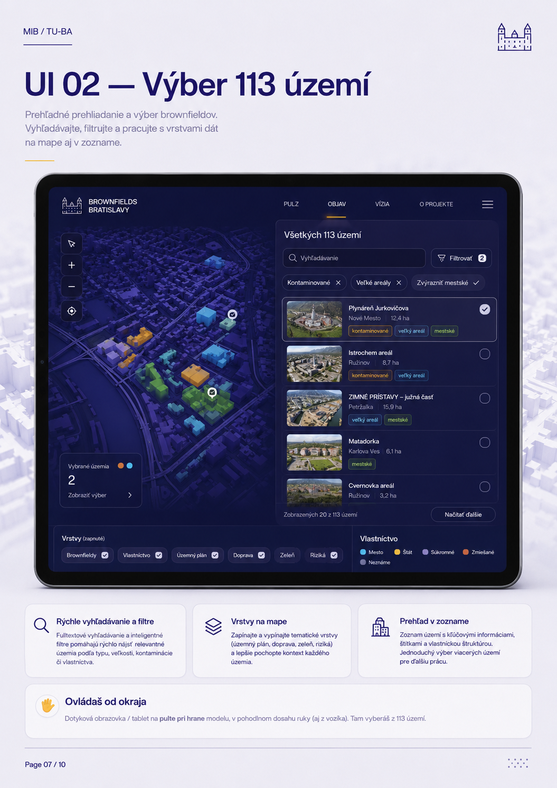
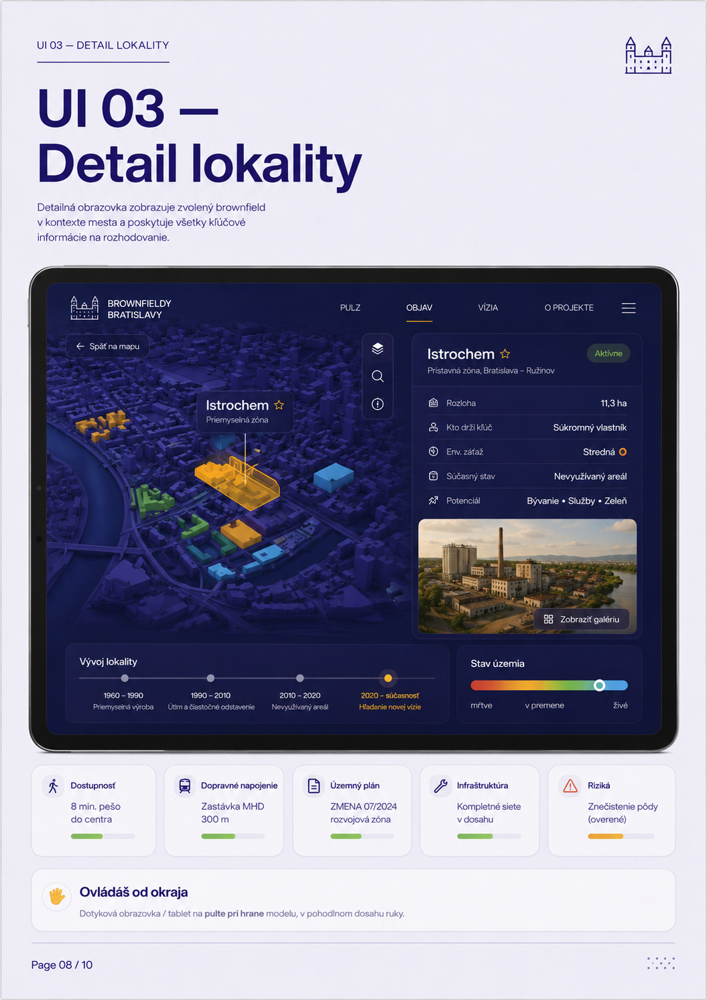
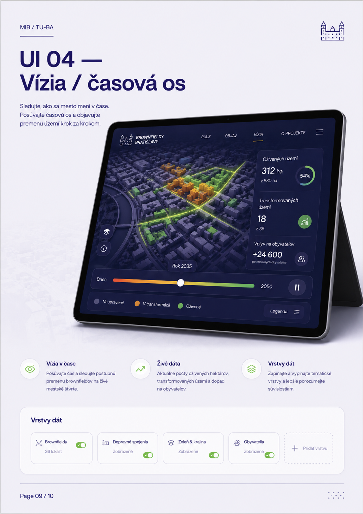
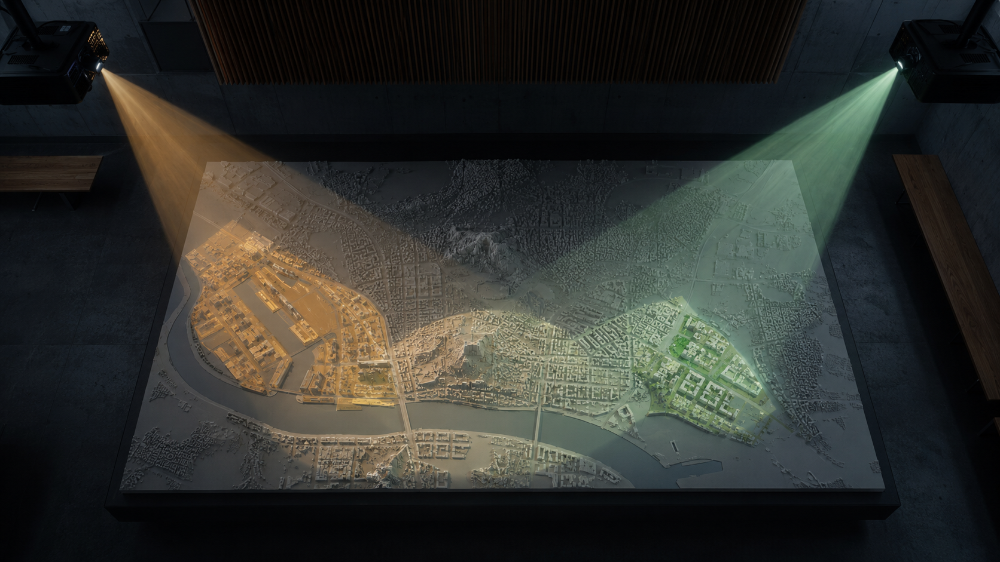
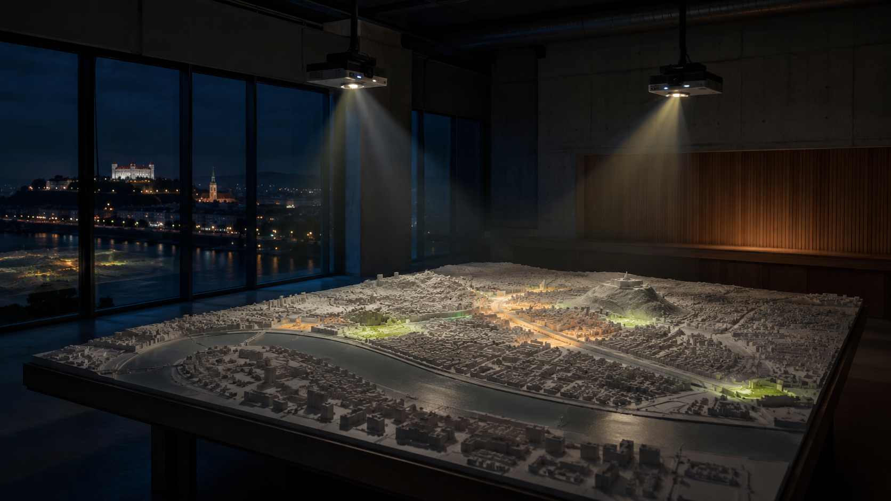

Brownfieldy Bratislavy
Brand & UI System
Interaktívny model mesta a dotykové rozhranie pre tému brownfieldov — od nevyužitých území k živým štvrtiam.

Ovládaš od okraja
Dotyková obrazovka / tablet je na pulte pri hrane modelu, v pohodlnom dosahu ruky.
Logo & názvoslovie
Jednotná vizuálna identita pomáha vysvetliť, že nejde o jednu obrazovku, ale o systém medzi modelom, projekciou a dotykom.
Brownfieldy Bratislavy
Základný názov celého dátového a komunikačného systému.
Pulz · Objav · Vízia
Tri jednoduché slová pre tri mentálne modely práce s mestom.
Model svieti, obrazovka vysvetľuje
Na maketu nepatrí text ani dotyk. Patrí tam priestor, farba a pohyb.
Pokojový režim. Mesto dýcha a láka prísť bližšie.
Výber územia, filtre, zoznam a detail lokality.
Časová os, oživené hektáre a mestské väzby.
Zdroje dát, metodika a kontext TU-BA.
Farby & sémantika
Paleta používa MIB indigo ako identitu a sémantické farby pre stav územia. Farba nie je dekorácia — je to dátová značka.
#30287B#EEEDF4#8B88A3#F4B860#29B826#4EC5F9#E4564FTypografia, grid & spacing
Veľká typografia nesie sebavedomie verejnej inštitúcie. Grid drží komplexné dáta pokojné a čitateľné.
Typografická hierarchia
Mesto stíchlo.
Brownfieldy svietia.
Interaktívny model mesta
Zóny, územia a potenciál
Brownfieldy sú nevyužité územia s veľkým potenciálom. Platforma prepája fyzickú projekciu, dotykové rozhranie a verejný dialóg.
12-stĺpcový grid
Komponenty & ikonografia
Základné stavebné prvky rozhrania: tlačidlá, segmenty, karty, filtre, legendy, prepínače a indikátory.
Primárne / sekundárne
Dotykové akcie majú jasný kontrast a minimálnu výšku 44 px.
Pulz · Objav · Vízia
Tri režimy prepínajú správanie modelu aj obrazovky.
Detail a upozornenia
Skupiny dát sú v mäkkých kartách, nie v tabuľkovom hluku.
Vlastníctvo, stav, záťaž
Filter je vždy čitateľný ako aktívna dátová vrstva.
Farba = význam
Sivá, jantár, zelená, červená bodka, cyan línia.
113 · 580 ha · %
Čísla sú tabular a slúžia ako oporné body dialógu.
Domov / Intro
Úvodná obrazovka víta používateľa, predstavuje zámer modelu a ponúka tri režimy pre objavovanie brownfieldov.
Silné posolstvo
Od nevyužitých území k živým štvrtiam.
Tri režimy
Rýchly vstup do rôznych spôsobov práce s modelom.
Hlavná akcia
Rozsvietiť model a ponoriť sa do vizualizácie.
Výber 113 území
Prehľadné prehliadanie a výber brownfieldov. Vyhľadávanie, filtre a vrstvy dát fungujú na mape aj v zozname.

Rýchle hľadanie
Nájsť lokalitu podľa názvu, veľkosti, kontaminácie či vlastníctva.
Vrstvy na mape
Zapínať tematické vrstvy a lepšie pochopiť kontext.
Prehľad v zozname
Jednoduchý výber viacerých území pre ďalšiu prácu.
Detail lokality
Detailná obrazovka zobrazuje zvolený brownfield v kontexte mesta a dáva všetky kľúčové informácie na rozhodovanie.

Dostupnosť
MHD, pešo, väzby na mesto.
Dopravné napojenie
Zastávky, železnica, diaľnica.
Územný plán
Regulácia a transformačný rámec.
Riziká
Znečistenie pôdy, vlastníctvo, bariéry.
Vízia / časová os
Sledujte, ako sa mesto mení v čase. Posúvajte časovú os a objavujte premenu území krok za krokom.
Vízia v čase
Premena brownfieldov na živé mestské štvrte.
Živé dáta
Aktuálne počty oživených hektárov a dopadov.
Vrstvy dát
Tematické vrstvy pre lepšie pochopenie súvislostí.


Ovládaš od okraja
Fyzické umiestnenie
Dotyková obrazovka je vždy umiestnená na pulte pri hrane modelu — v prirodzenom dosahu ruky, pohodlne a inkluzívne.
Prístupné pre všetkých
Ovládanie aj z vozíka, bez bariér a kompromisov.
Prirodzený dosah
Všetko dôležité na dosah jednej ruky bez naťahovania.
Prečo pri hrane?
Nezakrýva výhľad na model a udržiava pozornosť pri meste.
Na maketu sa nesiaha
Obrazovka je vstup. Fyzický model je projekčné plátno a spoločný priestorový výstup.
Model je spoločné plátno
Projekcia prináša do priestoru emóciu a mierku. Obrazovka drží text, dáta a detail. Táto deľba médií je jadro celého konceptu.
Model + projekcia
Priestor, mierka, svetlo, vzťahy, tma → svetlo.
Obrazovka / tablet
Výber, filtre, vlastníctvo, príbeh lokality, čísla.

Od tmy k dohode o meste
Brownfieldy nie sú len prázdne plochy. Sú to skryté rozhodnutia o bývaní, zdraví, vlastníctve a budúcom raste Bratislavy.
Pomenovať neviditeľné územia.
Rozsvietiť ich na spoločnom modeli.
Otvoriť detail a dáta na obrazovke.
Premeniť tému na dialóg.
